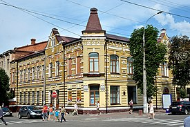
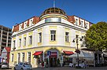
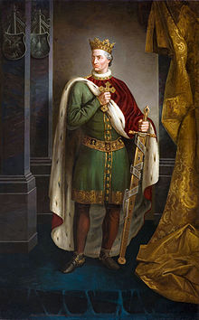
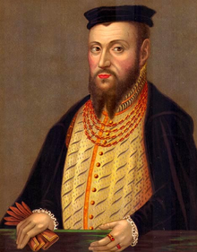
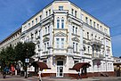
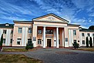

Про мiсто


Головне
Хмельни́цький, до 1794 року — Плоски́рів, з 1795 по 1954 — Проску́рів) — місто в Україні,
адміністративний центр Хмельницької області і Хмельницького району, сучасний економічний і
культурний центр Поділля. Чисельність населення 274 452 особи.
Місто розташоване на берегах Південного Бугу, за 376 км (автомобільним шляхом) від Києва.
Залізничний вузол (станції Хмельницький, Гречани). Через місто проходять автошляхи
Житомир—Чернівці (Н03) і частина міжнародного маршруту E50 автодорога міжнародного значення
Стрий — Тернопіль — Кропивницький — Знам'янка (М12).
Відоме з 1431 року. Місто обласного значення з 1941 року.
Назви
Хмельницький за всю історію мав декілька назв. У найдавнішому писемному свідченню про цей
населений пункт він згадується як Ploskirowce (Плоскирівці). У пізніших документах місто
згадується як Плоскирів. Найімовірніше, ця назва походить від назви річки Плоска, що неподалік
від міста впадає у Південний Буг.
У 1795 році у складі Російської імперії було утворено Подільську губернію. У імператорському
указі про її створення було згадано місто Проскурів як центр одного з повітів. Цей топонім дуже
схожий на назву «проскура», тобто літургійний богослужбовий хліб.
16 січня 1954 року місто перейменоване на Хмельницький на честь Богдана Хмельницького і стало
центром Хмельницької області.


Історія
Територія, на якій розташований Хмельницький, була заселена ще в давні часи. Дослідження виявили
в околицях міста чимало археологічних пам'яток. Зокрема, на схід від мікрорайону Лезневе —
поселення з матеріалами доби бронзи 2 тис. до н. е. та скіфського часу 7-3 ст. до. н. е., у
мікрорайоні Озерна — багатошарове поселення з матеріалами ранньої залізної доби І тис. до н. е.,
у мікрорайоні Дубове — поселення скіфського часу 7-3 ст. до. н. е., у мікрорайонах Гречани та
Озерна — поселення черняхівської культури 3-4 ст. тощо. До наших днів збереглися кургани, які
датуються археологами 7-3 ст. до. н. е. (скіфський час) — один у мікрорайоні Виставка[6] та два
на південний схід від мікрорайону Ракове.
Місто Хмельницький походить від невеликого поселення Плоскирів або Плоскирівці, час заснування
якого невідомий. Перша достовірна згадка про Плоскирів (Плоскировець) міститься у привілеї,
виданому великим князем Литовським і Руським та Королем Русі Владиславом ІІ Ягайлом в 1431 р.
під час війни із іншим претендентом на великокнязівський престол — Свидригайлом Ольгердовичем.
Відповідно до запису від 10 лютого 1431 року, зробленому у Сопоті, Владислав записав Янові
Чанстуловському за 100 гривень право на володіння селами Голисин (нині село Олешин Хмельницького
району) та Плоскирівці на річці Південний Буг у Летичівському повіті Подільської землі («… super
villis Holissin et Ploskir о wcze super fluvio Boh iacentu in terra Podoliensi et districtum
Latichoviensi sitas»).
Цю найдавнішу на сьогодні писемну згадку про Хмельницький введено в науковий обіг завдяки
дослідженням істориків. Ще у 1990-х роках Микола Петров — професор Кам'янець-Подільського
університету, посилаючись на історика XIX ст. Михайла Орловського, висловив думку про існування
Плоскирова у 1430-х роках XV ст. У 2000-х роках Сергію Єсюніну, співробітнику Хмельницького
обласного краєзнавчого музею, вдалося відшукати в одному із томів «Архива Юго-Западной России»
відомості про існування Плоскирова у 1434—1464 роках з перепосиланням на документи Литовської
метрики. Сергій Миколайович звернувся до київського історика Віталія Михайловського із проханням
зробити копії документів XV століття, в яких згадується Плоскирів. Єсюнін опублікував їх у книзі
«Місто Хмельницький: історія, події, факти», а Віталій Михайловський — в «Українському
археографічному щорічнику» (випуск 8/9). Саме з того часу поширилась інформація про нову дату
найдавнішої згадки про місто — 1431 рік.
2006 року було проведено наукову конференцію «Місто Хмельницький в контексті історії України», після якої міська влада затвердила дату 1431 рік як першу згадку про Хмельницький, а місто замість свого 513-річчя відсвяткувало 575 річницю від першої писемної згадки. До цього згадка датувалась 1493 роком.


Вулиці міста
На карті Хмельницького зафіксовано більше 500 вулиць, провулків, проїздів та майданів. У 1824 році розпочалась повна перебудова міста після великої пожежі, яка сталася у 1822 році. Генеральний план перебудови був розроблений подільським губернським землеміром В. Рудлицьким та архітектором Вільямсом Гесте.
План мав чіткий поділ на вулиці, вся територія міста була поділена на 51 квартал та 403 садибні ділянки. За цим планом були прокладені всі основні вулиці центральної частини міста (такий розподіл зберігся до наших часів). Окреслилися та отримали назви вулиці Соборна, Купецька (нині — Подільська), Дворянська (нині — Володимирська), Комерційна (нині — Грушевського), Аптекарська (нині — Проскурівського підпілля), Реміснича (нині — Вайсера), Мільйонна (нині — Театральна/Героїв Майдану), Старобульварна (нині — нині Гагаріна та частина Свободи), та інші. Центральними залишилися і вище згадані поштові шляхи: дорога на Летичів отримала назву вулиця Олександрівська (нині — Проскурівська), а на Кам'янець — Кам'янецька. Нові вулиці (за новим перспективним планом землеміра Подільської Палати державних маєтностей В. Осецького: Велика Вокзальна (нині — Шевченка), Мала Вокзальна (нині — Пилипчука), Новобульварна (нині — Франка) та інші. З'явилися перші вулиці за лінією залізниці, на відведених для військового відомства землях і у передмісті Дубове. Таким чином, на початку XX століття (дані на 1909 р.) у Проскурові було 38 вулиць та провулків. XX—XXI століття принесли Хмельницькому бурхливу розбудову та перейменування більшості вулиць центральної частини міста, перетворення його з невеликого торгово-ремісничого міста у регіональний та обласний центр.